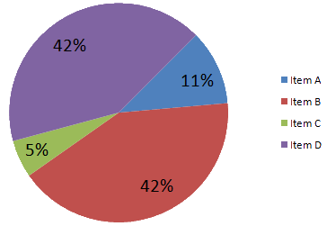
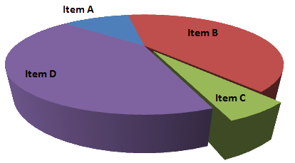
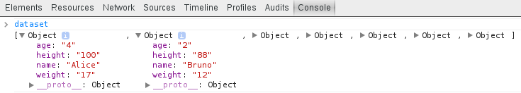
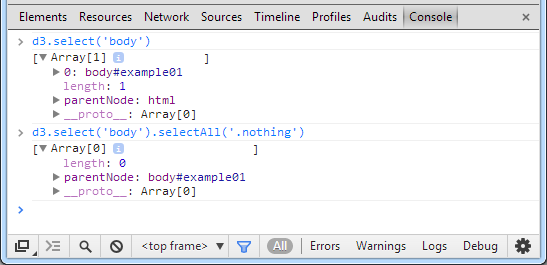
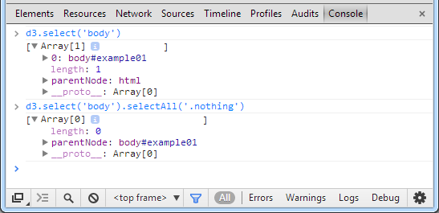
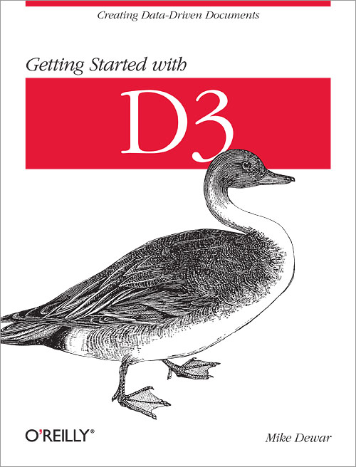
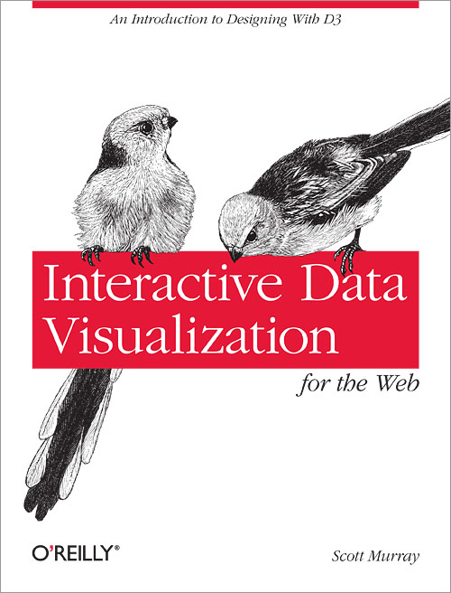
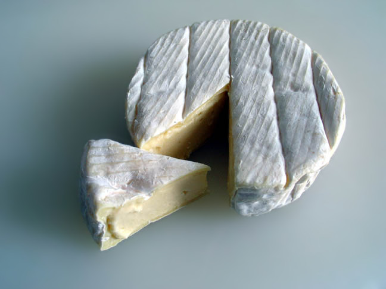
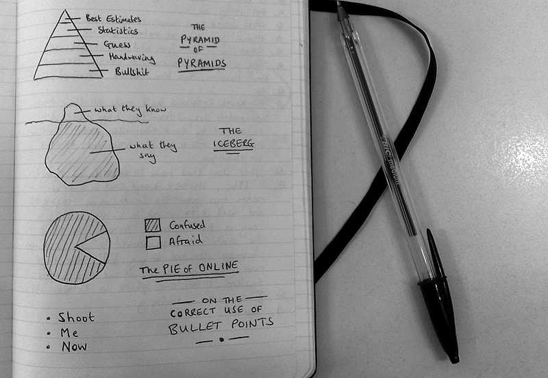

Pablo Tamarit

- Boulot:
- Web
- Java, Groovy, Clojure
- GWT
- Avant le dodo:
- JavaScript
- Résultats visuels
Au programme
- Visualisation de données
- Visualisation de données pour le web
- Visualisation de données pour le web avec D3.js
Visualisation de données
Données
- De plus en plus de données produites
- De plus en plus de données ouvertes


 APIs
APIs
- Important de visualiser ces données
- Data-driven journalism
- The Guardian
- The New York Times
- Neue Zürcher Zeitung
Très à la mode
Mais rien de neuf
Camemberts
Camemberts 3D
Visualisation de données
pour le web
World Wide Web

- HTTP
- URL
- HTML
Naviguer d'une page à l'autre via des hyperliens
click here
Vectoriel vs Bitmap
Retained mode vs Immediate mode
| Retained mode (SVG) |
Immediate mode (Canvas) |
|---|---|
| Modèle complet des objets graphiques | Dessine et oublie |
| Rendu géré par le moteur | Contrôle complet du rendu |
| Attacher des listeners/handlers aux objets graphiques | Interactions via les coordonnées de la souris |
| Performances OK avec nombre d'objets raisonnables | Performances "constantes" |
Visualisation de données
pour le web avec D3.js
14 octobre 2013
Mike Bostock

Un exemple
Nos données
| name | age | height | weight |
|---|---|---|---|
| Alice | 4 | 100 | 17 |
| Bruno | 2 | 88 | 12 |
| Charles | 85 | 177 | 57 |
| Dédé | 25 | 168 | 67 |
| Etienne | 42 | 182 | 80 |
| Françoise | 8 | 127 | 25 |
| Gégé | 50 | 160 | 83 |
Notre visualisation
- personne → cercle
- âge → axe des x
- taille → axe des y
- poids → diamètre
Source SVG
<svg width="640" height="480">
<circle cx="24" cy="280" r="17" opacity=".5"/>
<circle cx="12" cy="304" r="12" opacity=".5"/>
<circle cx="510" cy="126" r="57" opacity=".5"/>
<circle cx="150" cy="144" r="67" opacity=".5"/>
<circle cx="252" cy="116" r="80" opacity=".5"/>
<circle cx="48" cy="226" r="25" opacity=".5"/>
<circle cx="300" cy="160" r="83" opacity=".5"/>
</svg>Axe des y inversé (origine en haut à gauche)
Notre HTML
<!DOCTYPE html>
<html lang="en">
<head>
<meta charset="utf-8">
<title></title>
</head>
<body>
<div id="placeholder"></div>
<script src="d3.js"></script>
<script src="main.js"></script>
</body>
</html>Package Managers
Disponible sur


- CDN
Notre JavaScript
// main.js
// TODO
Nos données en JSON
[
{"name": "Alice", "age": 4, "height": 100, "weight": 17},
{"name": "Bruno", "age": 2, "height": 88, "weight": 12},
{"name": "Charles", "age": 85, "height": 177, "weight": 57},
{"name": "Dédé", "age": 25, "height": 168, "weight": 67},
{"name": "Etienne", "age": 42, "height": 182, "weight": 80},
{"name": "Françoise", "age": 8, "height": 127, "weight": 25},
{"name": "Gégé", "age": 50, "height": 160, "weight": 83}
]Format natif
Nos données en CSV
name,age,height,weight
Alice,4,100,17
Bruno,2,88,12
Charles,85,177,57
Dédé,25,168,67
Etienne,42,182,80
Françoise,8,127,25
Gégé,50,160,83Plus compact que JSON
Récupération des données
d3.json('path/to/file.json', function(error, dataset) {
if (error) return console.warn(error);
// TODO: Visualize the dataset
});
d3.csv('path/to/file.csv', function(error, dataset) {
if (error) return console.warn(error);
// TODO: Visualize the dataset
});
var visualize = function(error, dataset) {
if (error) return console.warn(error);
// TODO: Visualize the dataset
};
d3.csv('path/to/file.csv', visualize);Récupération des données
Sélection
d3.select('body');
d3.select('.class');
d3.select('#id');
d3.select('[color=black]');
d3.select('parent child');
d3.select('.this.that');
d3.select('.this, .that');
var placeholder = d3.select('#placeholder');Inclure Sizzle au besoin
Sélection
d3.selectAll('body');
d3.selectAll('.class');
d3.selectAll('#id'); // FIXME: Non-unique IDs?
d3.selectAll('[color=black]');
d3.selectAll('parent child');
d3.selectAll('.this.that');
d3.selectAll('.this, .that');
var placeholders = d3.selectAll('.placeholder');Inclure Sizzle au besoin
Opérations sur les sélections
var imgs = d3.selectAll('img')
.attr('title', 'Tooltips for everyone!');
var h2s = d3.selectAll('h2')
.style('font-style', 'italic')
.style('font-weight', 'bold');
var ps = d3.selectAll('p')
.text('pwned');
var pz = d3.selectAll('p')
.html('<blink>pwned</blink>');
var svg = d3.select('#placeholder')
.append('svg')
.attr('width', 640)
.attr('height', 480);Interface fluide (chaînage de méthodes)
Chaînes de caractères = pas de limitations liées à la librairie
append et insert retournent une nouvelle sélection
Retour sur notre exemple
var svg = d3.select('#placeholder')
.append('svg')
.attr('width', 640)
.attr('height', 480);
var visualize = function(error, dataset) {
if (error) return console.warn(error);
// TODO: Visualize the dataset
};
d3.csv('path/to/file.csv', visualize);Visualisation
var visualize = function(error, dataset) {
if (error) return console.warn(error);
for (var i = 0; i < dataset.length; i++) {
var person = dataset[i];
svg.append('circle')
.attr('opacity', 0.5)
.attr('r', person.weight)
.attr('cx', person.age * 6) // 100 years old * 6 ~= 640
.attr('cy', 480 - person.height * 2); // 200 cm high * 2 ~= 480
}
};Résultat
Fin?
Nos données... en plus
| name | age | height | weight |
|---|---|---|---|
| Alice | 4 | 100 | 17 |
| Bruno | 2 | 88 | 12 |
| Charles | 85 | 177 | 57 |
| Dédé | 25 | 168 | 67 |
| Etienne | 42 | 182 | 80 |
| Françoise | 8 | 127 | 25 |
| Gégé | 50 | 160 | 83 |
| name | age | height | weight |
|---|---|---|---|
| Alice | 9 | 140 | 30 |
| Bruno | 7 | 110 | 22 |
| Dédé | 30 | 172 | 75 |
| Etienne | 47 | 182 | 70 |
| Zoé | 2 | 84 | 10 |
| Françoise | 13 | 141 | 42 |
Visualisation v1.1
var visualize = function(error, dataset) {
if (error) return console.warn(error);
svg.selectAll('circle').remove();
for (var i = 0; i < dataset.length; i++) {
var person = dataset[i];
svg.append('circle')
// ...
}
};
d3.csv('path/to/dataset-2000.csv', visualize);
// Called later...
d3.csv('path/to/dataset-2005.csv', visualize);Sélection d'une sélection d3.select('svg').selectAll('circle')
Résultat v1.1
Sans animation, c'est pas la joie!
On jette tout et on recommence?
TODO v2.0
- Préserver les cercles
- Transitions (interpoler positions et diamètres)
- Apparitions et disparitions
Binding
aka Join
Thinking with Joins
Visualisation v2.0
var visualize = function(error, dataset) {
if (error) return console.warn(error);
var circles = svg
.selectAll('circle')
// The unique key is the name.
.data(dataset, function(d) { return d.name; });
// UPDATE
circles
//...
// ENTER
circles
.enter()
//...
// EXIT
circles
.exit()
//...
};parentNode
 

Visualisation v2.0
// UPDATE
circles
.transition().duration(750)
.call(positionAndSizeCircle);
// ENTER
circles
.enter()
.append('circle')
.style('opacity', 0)
.call(positionAndSizeCircle)
.transition().duration(750)
.style('opacity', 0.5);
// EXIT
circles
.exit()
.transition().duration(750)
.style('opacity', 0)
.remove();Visualisation v2.0
var positionAndSizeCircle = function(circle) {
circle
.attr('r', function(d) {
return d.weight;
})
.attr('cx', function(d) {
return d.age * 6; // 100 years old * 6 ~= 640
})
.attr('cy', function(d) {
return 480 - d.height * 2; // 200 cm high * 2 ~= 480
});
};Sticky data: __data__
Résultat v2.0
Reste à faire
- Scales (domain, range)
- Axes
- Interactions
- ...
Exemples plus poussés
Livres
 Conclusion
- Choix technologiques
- Prendre le temps de la réflexion
- Expérimentation
- Minutie
Crédits
Cette présentation a été créée avec
du code
des polices de caractères
des pixels
Crédits graphiques
-  par Nataraja (CC BY-SA 3.0)
- par Flo (CC BY-SA-2.5)
- par Darkzink (CC0 1.0)
 © 1869 Charles Joseph Minard
© 1869 Charles Joseph Minard- © 1865 Charles Joseph Minard
 © 1858 Florence Nightingale
© 1858 Florence Nightingale Utilisé avec la permission de Microsoft
Utilisé avec la permission de Microsoft-  par STML (CC BY-NC-ND 2.0)


.jpg){kind=link}
{kind=link}
{kind=link}
- par Smallman12q (CC0 1.0)
- par Smallman12q (CC0 1.0)
 © 2009 Andrew Abela
© 2009 Andrew Abela- © 1994 CERN
- © 1995 CERN
- © 2012 Mike Bostock
{kind=link}
{kind=link}